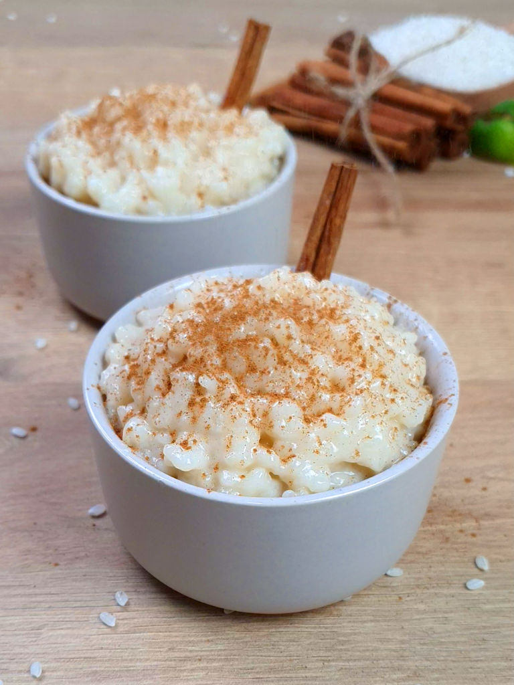

Home
Rice Pudding

Description
Rice pudding is a creamy dessert made from rice slowly cooked with milk, sugar, and a touch of cinnamon or vanilla. It’s sweet, comforting, and often enjoyed warm or chilled.
Ingredients
- 125g Risotto Rice
- 1l Milk
- 70g Sugar
- 1 Cinamon stick
- Little bit of the peel of a lemon
Steps
- Mix the rice, milk, peel of lemon and cinamon together on a pot.
- Put the pot on high fire, stiting well until is boiling.
- Lower the fire to slow and stir every 5-6 minutes during 1 hour (or is starting to get creamy).
- Add the sugar and stir during 1 minute so it doesn't get stuck
- Stir every 5 minutes for another 15 minutes.
- When creamy, remove from fire, take out the cinamon stick and the lem mon peel.
- Put the pudding in a container.
- Wait until is cooled down and store in the fridge.
- Preferably serve cold and with cinamon powder on top.